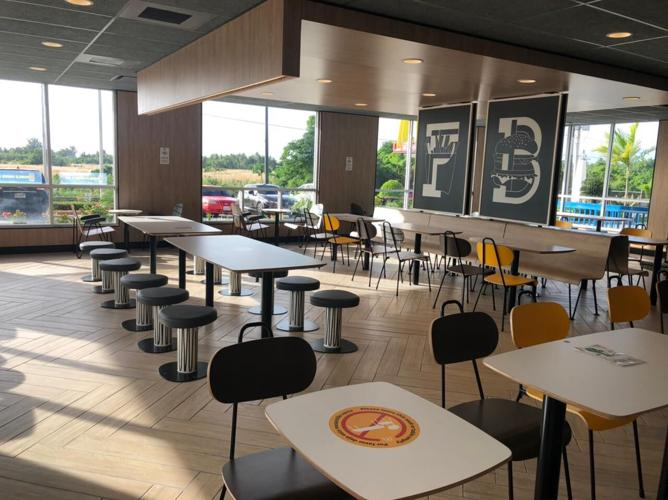
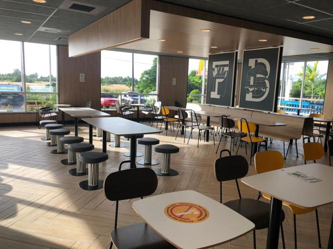

Food is something you should try and experience everytime you travel, so as shown below, here are a couple of my favorite places to dine, and I hope it brings you interest when you would visit Saipan someday.
 

Mc. Donalds serves great meals, which I enjoy the most. They even have refreshments and desserts for you. The employees are welcoming, along with their birthday clown, who makes the environment for Mc. Donalds lively.
What I love:Paul Talibong
(670) 287-3307